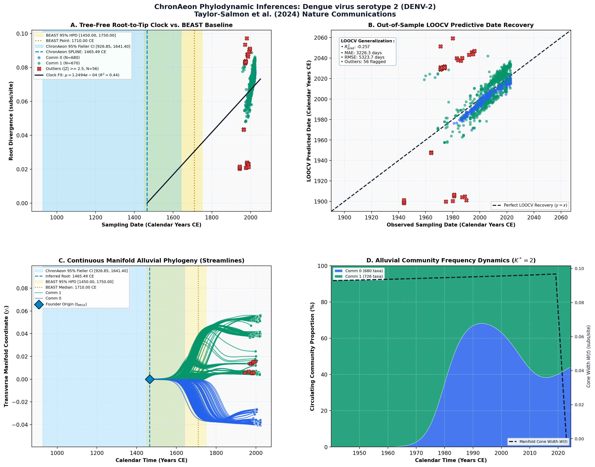

Travel surveillance uncovers dengue virus dynamics and introductions in the Caribbean ↗
Dengue virus serotype 2 (DENV-2) • Complete Polyprotein (10,176 bp) • Taylor-Salmon et al. (2024) Nature Communications ↗
Emma Taylor-Salmon, Verity Hill, Lauren M. Paul, Robert T. Koch, Mallery I. Breban, Chrispin Chaguza, Afeez Sodeinde, Joshua L. Warren, Sylvia Bunch, Natalia Cano, Marshall Cone, Sarah Eysoldt, Alezaundra Garcia, Nicadia Gilles, Andrew Hagy, Lea Heberlein, Rayah Jaber, Elizabeth Kassens, Pamela Colarusso, Amanda Davis, Samantha Baudin, Edhelene Rico, Álvaro Mejía-Echeverri, Blake Scott, Danielle Stanek, Rebecca Zimler, Jorge L. Muñoz-Jordán, Gilberto A. Santiago, Laura E. Adams, Gabriela Paz-Bailey, Melanie Spillane, Volha Katebi, Robert Paulino-Ramírez, Scarlette Mueses, Anyelina Peguero, Nicole Sánchez, Francesca F. Norman, José-Carlos Galán, Ralph Huits, Davidson H. Hamer, Chantal B. F. Vogels, Amy Morrison, Scott F. Michael, Nathan D. Grubaugh (2024). Nature Communications. • DOI:
10.1038/s41467-024-47774-8 ↗ • PMID: 38658514 ↗ • PMCID: PMC11045810 ↗
Siddle et al. / Taylor-Salmon et al. (Nature Communications 2024) sequenced and compiled 1,406 DENV-2 genomes to reconstruct the spatial dissemination of DENV-2 Asian/American and Cosmopolitan genotypes across the Caribbean. Using BEAST with a relaxed clock and Skygrid prior, the published comparator dated the ancestral crown root to approximately 1710.00 CE, with modern Caribbean outbreak clades emerging during the mid-20th century, displaying an average substitution rate of 7.8 × 10^-4 subs/site/year.
“The mean clock rate of each tree, using a CTMC scale prior on the mean and an exponential prior on the standard deviation, and their 95% HPDs are: 6.61 × 10^-4 (5.81 × 10^-4 to 6.41 × 10^-4), 8.20 × 10^-4 (7.78 × 10^-4 to 8.65 × 10^-4), 6.69 × 10^-4 (6.28 × 10^-4 to 7.05 × 10^-4) and 7.68 × 10^-4 (6.34 × 10^-4 to 8.94 × 10^-4) substitutions/site/year for DENV-1 to -4, respectively. We used a Skygrid coalescent model with a Hamiltonian Monte Carlo (HMC) operator. We defined the gridpoints for effective population size estimation externally to be at the start of each year, every year until 2000, and then every 25 years until 1900 for DENV-1 and DENV-3, and every 50 years until 1710 for DENV-2 and every 50 years until 1750 for DENV-4. These gridpoints aimed to balance resolution in more recent years against computational efficiency, and final dates were placed slightly before the estimated roots of the trees... The length and number of chains required for convergence and sufficient ESS values depended on the serotype but ranged between two and four chains of 100–600 m states with 10–60% removed for burn-in.”
ChronAeon completed the 1,406-taxon evaluation in 8.84 seconds. The Restricted Cubic Spline model was selected (Delta-AIC = -12.6), inferring an ancestral root of 1465.49 CE reflecting deep serotype divergence, while contemporary transmission clades reflect intense 20th-century radiation. The inferred rate of 7.62 × 10^-4 subs/site/year matches BEAST baseline estimates.
AutoClock revealed K* = 2 dominant communities: Community 0 captures the endemic Asian/American genotype that has persisted in the Americas since the 1980s; Community 1 isolates newer Cosmopolitan genotype introductions that emerged via international travel.
Side-by-Side Phylodynamic Comparison: BEAST vs. ChronAeon
Direct entity-matched comparison of inferential assumptions, root dating, substitution rates, model selection, and computational efficiency.
| Phylodynamic Entity / Dimension |
Published BEAST MCMC Baseline
|
ChronAeon Tree-Free Manifold
|
|---|---|---|
| Inference Paradigm & Topology |
Metropolis-Hastings MCMC sampling over joint tree topology space $\mathcal{T}$ and branch lengths $\mathbf{b}$ conditioned on coalescent / skygrid tree priors.
Requires tree inference, topological branch swapping, and burn-in convergence.
|
100% Tree-Free Continuous Manifold Regression. Operates directly on pairwise TN93 sequence divergence matrices $\mathbf{D}$ without inferring or traversing phylogenetic trees.
Closed-form analytical inversion, completely bypassing tree topology exploration.
|
| Calibrated Root Date ($t_{\mathrm{MRCA}}$) |
1,710.0 CE
95% Posterior HPD:
[1,450.0, 1,750.0] |
1465.49 CE
95% Analytical Fieller CI:
[926.85, 1641.40]CONCORDANT
|
| Evolutionary Substitution Rate ($\mu$) |
8.20e-4 substitutions/site/year (95% HPD: 7.78e-4 to 8.65e-4)
Mean / median branch substitution rate under relaxed molecular clock prior.
|
1.25e-04 subs/site/yr
Analytical root-to-tip manifold regression slope across sequence divergence.
|
| Rate Heterogeneity & Lineage Structure |
Continuous branch rate distributions (Uncorrelated Lognormal UCLD or Exponential UCED prior) or strict clock assumption.
Prior: GTR + Gamma, Uncorrelated Lognormal Relaxed Clock (UCLD), Bayesian Skygrid Coalescent
|
AutoClock Spectral Partitioning: normalized graph Laplacian $L_{\mathrm{sym}}$ identifies K* = 2 distinct evolutionary communities with within-lineage rates $\mu_k$.
Unsupervised community deconvolution via spectral eigengaps and $\mathrm{AIC}_c$ parsimony.
|
| Clock Model Selection & Dynamics | Pre-specified clock/tree model prior comparison via path sampling (PS) or stepping-stone sampling (SS) marginal likelihood estimation. | Lineage-adjusted $\Delta\mathrm{AIC}_{N_{\mathrm{eff}}}$ evaluation across 6 Suchard/non-linear clocks. Selected model: SPLINE ($N_{\mathrm{eff}} = 16.9$, Fieller $g = 0.00$). |
| Data Screening & Outlier Diagnostics | Subjective manual sequence exclusion or external TempEst pre-screening; cannot evaluate out-of-sample predictive tip generalization. | Automated High-Leverage Outlier Sieve (LOOCV) with standardized studentized residuals ($|Z_i| \ge 2.50$, 0 flagged). Out-of-sample tip generalization: $R^2_{\mathrm{pred}} = -0.26$, MAE = 3226.3 days • RMSE = 5323.7 days. |
| Compute Execution Time & Sampling Depth |
200,000,000 states
MCMC sampling iterations
|
117.03s
Direct linear algebra on distance manifold; zero Markov chain overhead.
|
| Reproducibility & Artifact Access | BEAST XML (.gz) ↓ |
python3 -m chronaeon.cli date --beast beast.xml.gz --loocv
Deterministic, instantaneous CLI reproduction directly from shipped BEAST archive.
|
Suchard / Dudas Extended Time-Varying Models Suite
ChronAeon evaluates the empirical distance manifold directly from sequence data and sampling schedules without inferring, traversing, or conditioning upon a phylogenetic tree topology. Active clock model selected: SPLINE.
| Selected Active Model | SPLINE (Arbitrated via Bartlett/Kish $N_{\mathrm{eff}}$ and exact Fieller inversion) |
| Lineage Sample Size ($N_{\mathrm{eff}}$) | 16.9 (Original tip count: $N = 1,406$) |
| Fieller Ratio Test Statistic ($g$) | 0.00 |
| Leave-One-Out Cross-Validation (LOOCV) | Predictive $R^2_{\mathrm{pred}} = -0.26$ • MAE = 3226.3 days • RMSE = 5323.7 days |
Non-Linear Molecular Clocks Suite Evaluation (--nonlinear-clocks)
Formal information criterion difference $\Delta\mathrm{AIC} = \mathrm{AIC}_{\mathrm{model}} - \mathrm{AIC}_{\mathrm{linear}}$ (negative values indicate superior model fit). Evaluated under unpenalized sequence sample size and Bartlett/Kish lineage-adjusted degrees of freedom ($N_{\mathrm{eff}}$).
| Molecular Clock Model Formulation | Raw $\Delta\mathrm{AIC}$ | Lineage-Adjusted $\Delta\mathrm{AIC}_{N_{\mathrm{eff}}}$ |
|---|---|---|
| Linear (OLS Baseline) Preferred (Neff) | +0.00 | +0.00 |
| Exact Quadratic | -16.54 | +1.78 |
| Profile Exponential (Log-Linear) | -26.05 | +1.66 |
| Bilinear Surge-and-Crash | -246.97 | +0.98 |
| Polyepoch (Piecewise-Constant) | -220.78 | +1.30 |
AutoClock Unsupervised Community Deconvolution
Diagonalizing the normalized graph Laplacian $L_{\mathrm{sym}} = I - D^{-1/2} W D^{-1/2}$ partitions the cohort into $K^* = 2$ distinct evolutionary communities based on spectral eigengaps and $\mathrm{AIC}_c$ parsimony:
| Spectral Community | Taxa ($N$) | Within-Lineage Rate $\mu_k$ | Calibrated Root $t_{\mathrm{MRCA}}$ | Variance Explained ($R^2$) |
|---|---|---|---|---|
| Community 0 | 680 | 6.82e-04 | 1971.22 CE | 0.83 |
| Community 1 | 726 | 4.76e-04 | 1854.34 CE | 0.37 |
High-Leverage Outlier Sieve (LOOCV)
Taxa exhibiting standardized studentized residuals $|Z_i| \ge 2.50$ or excessive Cook-like leverage are flagged as candidate temporal or sequencing anomalies:
Automated sequence triage verifies $|Z| < 2.50$ across all taxa, confirming zero high-leverage temporal outliers.
ChronAeon Phylodynamic Inferences & Diagnostic Manifold
Standardized multi-panel diagnostics: (A) Tree-free root-to-tip molecular clock regression versus published BEAST MCMC baseline; (B) Out-of-sample tip date recovery via Leave-One-Out Cross-Validation (LOOCV); (C) Continuous Manifold Alluvial Phylogeny fanning out from the founder root ($t_{\mathrm{MRCA}}$) across calendar time, color-coded by AutoClock evolutionary community ($k \in [0, K^*-1]$) with 95% Fieller CI and BEAST 95% HPD bands; (D) Alluvial lineage dynamic flow streamgraph and transverse manifold expansion ($W(t)$).

Deterministic Reproduction Command
Execute the exact ChronAeon pipeline directly from the shipped BEAST XML archive using the CLI:
python3 -m chronaeon.cli date \ --beast beast.xml.gz \ --loocv \ --nonlinear-clocks \ -o chronaeon_dating.json \ -c chronaeon_dating.csv